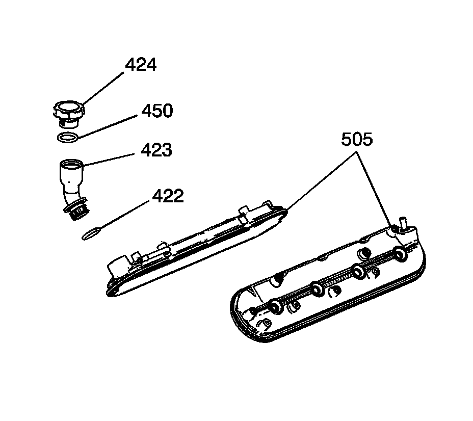

60. Valve Rocker Arm Cover Cleaning and Inspection
Valve Rocker Arm Cover Cleaning and Inspection

Important:
^ Do not use the valve rocker arm cover gasket again. Install a NEW gasket during assembly.
^ Remove the ignition coils before cleaning the cover in solvent. Do not submerge the ignition coils in solvent.
^ Do not remove the oil fill tube from the covers unless service is required. If the tube is removed from the cover, install a NEW tube (423) and seal (422) during assembly.
Inspect the oil fill tube (423) for a loose fit or damage.
1. Inspect the covers (505) for the following conditions:
^ Scoring or damage to the gasket surfaces
^ Ventilation system passages for restrictions
^ Threaded bolt holes for damage or debris